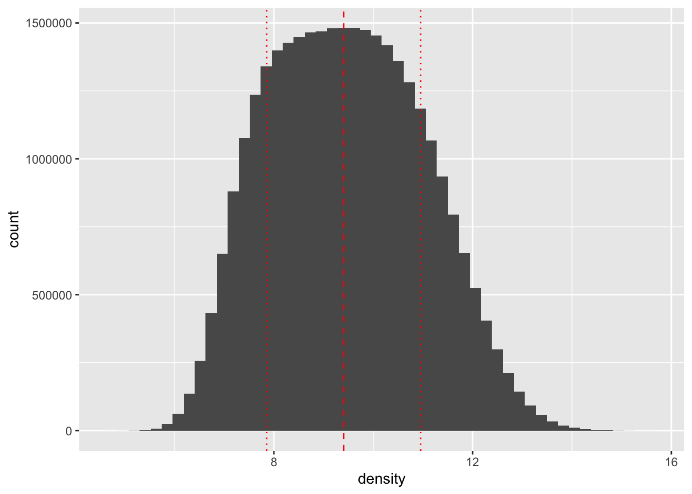
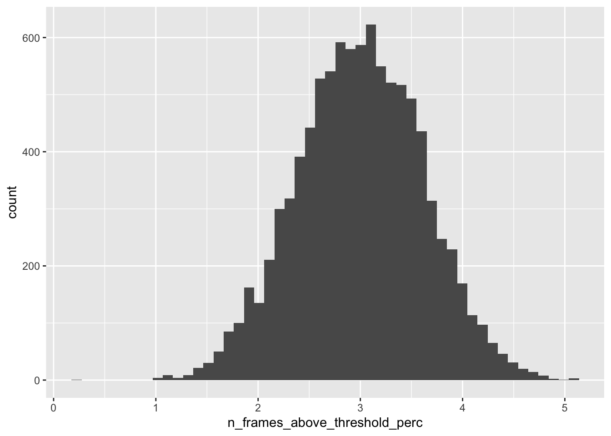
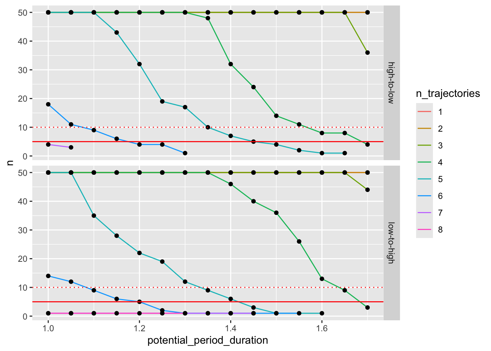

| i_dataset | trial_num | n_full_above | n_full_below | n_95_above | n_95_below | n_90_above | n_90_below |
|---|---|---|---|---|---|---|---|
| 1 | 283 | 5 | 0 | 6 | 0 | 7 | 0 |
| 1 | 561 | 5 | 0 | 6 | 0 | 6 | 0 |
| 2 | 13 | 5 | 1 | 5 | 1 | 6 | 1 |
| 2 | 50 | 5 | 0 | 7 | 0 | 7 | 0 |
| 2 | 65 | 5 | 2 | 5 | 2 | 5 | 2 |
| 2 | 131 | 5 | 2 | 5 | 2 | 5 | 2 |
| 3 | 145 | 5 | 1 | 7 | 1 | 8 | 1 |
| 3 | 584 | 5 | 0 | 5 | 1 | 6 | 1 |
| 4 | 121 | 5 | 1 | 5 | 2 | 5 | 2 |
| 4 | 127 | 5 | 0 | 8 | 0 | 8 | 0 |
| 4 | 146 | 5 | 0 | 5 | 1 | 6 | 2 |
| 4 | 599 | 5 | 1 | 6 | 2 | 6 | 2 |
| 6 | 284 | 5 | 1 | 5 | 1 | 5 | 1 |
| 6 | 358 | 5 | 0 | 5 | 0 | 6 | 0 |
| 7 | 8 | 5 | 2 | 5 | 2 | 5 | 2 |
| 7 | 38 | 5 | 2 | 5 | 2 | 6 | 3 |
| 7 | 163 | 5 | 1 | 6 | 2 | 6 | 2 |
| 7 | 291 | 5 | 2 | 5 | 2 | 5 | 3 |
| 7 | 448 | 5 | 1 | 5 | 1 | 5 | 2 |
| 8 | 50 | 5 | 1 | 6 | 1 | 6 | 1 |
| 8 | 474 | 5 | 0 | 5 | 0 | 7 | 0 |
| 9 | 62 | 5 | 0 | 5 | 1 | 6 | 2 |
| 9 | 277 | 5 | 2 | 5 | 2 | 5 | 2 |
| 9 | 476 | 5 | 0 | 6 | 0 | 6 | 0 |
| 9 | 551 | 5 | 0 | 5 | 2 | 6 | 3 |
| 9 | 585 | 5 | 0 | 5 | 1 | 5 | 1 |
MOT_Sequence_Creation
1 Task Parameters
We opt for N targets to track = 5 to have enough room above and below the typical performance of young adults at this variant of the MOT task (around 75% - Green and Bavelier (2006)).
2 Investigating Density Values
To define the threshold for low or high density throughout a trial, we compute the median of the density of dots collapsed across trials, frames, and circles. This gives us an empirical estimate of a threshold for the density where 50% of trajectory would be above this threshold and 50% would be above.

3 Density Low/High Throughout
For each existing trajectory, let’s estimate for how many frames each dot has a density above the threshold and below the threshold during the tracking period.

Let’s confirm that the spikes in the lowest and highest bins actually contains trajectories with all frames either above (1) or below (0) the threshold.
There are trajectories with a density above the threshold at all frames, and trajectories with a density below the threshold at all frames. So now we move on to investigating how many trajectories are always under/below the threshold for each trial.
And here are the trials we can pick from for the “above” and “below” condition trials. There are 26 possible trials for the above condition and 36 for the below condition.
| i_dataset | trial_num | n_full_above | n_full_below | n_95_above | n_95_below | n_90_above | n_90_below |
|---|---|---|---|---|---|---|---|
| 1 | 169 | 0 | 5 | 0 | 5 | 0 | 5 |
| 1 | 210 | 1 | 5 | 1 | 5 | 1 | 6 |
| 1 | 511 | 1 | 5 | 2 | 5 | 3 | 5 |
| 2 | 42 | 0 | 5 | 1 | 7 | 1 | 9 |
| 2 | 70 | 1 | 5 | 1 | 5 | 1 | 6 |
| 2 | 129 | 1 | 5 | 1 | 8 | 1 | 8 |
| 2 | 457 | 0 | 5 | 2 | 5 | 2 | 6 |
| 2 | 495 | 0 | 5 | 0 | 6 | 0 | 7 |
| 3 | 249 | 1 | 5 | 1 | 5 | 1 | 5 |
| 3 | 441 | 0 | 5 | 1 | 5 | 1 | 6 |
| 3 | 507 | 0 | 5 | 1 | 5 | 2 | 5 |
| 4 | 200 | 0 | 5 | 2 | 5 | 2 | 6 |
| 4 | 294 | 0 | 5 | 1 | 5 | 1 | 5 |
| 4 | 369 | 0 | 5 | 0 | 6 | 1 | 8 |
| 5 | 103 | 0 | 5 | 1 | 5 | 1 | 5 |
| 5 | 106 | 1 | 5 | 1 | 5 | 2 | 5 |
| 5 | 428 | 0 | 5 | 1 | 5 | 1 | 5 |
| 5 | 463 | 0 | 5 | 0 | 6 | 1 | 7 |
| 6 | 31 | 1 | 5 | 1 | 5 | 2 | 5 |
| 6 | 85 | 0 | 5 | 0 | 5 | 0 | 5 |
| 6 | 100 | 0 | 5 | 0 | 6 | 0 | 6 |
| 6 | 149 | 1 | 5 | 1 | 5 | 2 | 5 |
| 6 | 177 | 1 | 5 | 2 | 6 | 4 | 6 |
| 6 | 180 | 0 | 5 | 2 | 5 | 3 | 7 |
| 7 | 397 | 0 | 5 | 0 | 5 | 1 | 6 |
| 7 | 468 | 1 | 5 | 1 | 5 | 2 | 5 |
| 8 | 167 | 0 | 5 | 1 | 5 | 1 | 5 |
| 8 | 231 | 0 | 5 | 0 | 5 | 0 | 5 |
| 8 | 521 | 0 | 5 | 0 | 6 | 0 | 6 |
| 8 | 550 | 0 | 5 | 0 | 6 | 1 | 8 |
| 9 | 53 | 0 | 5 | 1 | 5 | 2 | 5 |
| 9 | 92 | 0 | 5 | 0 | 5 | 0 | 5 |
| 9 | 149 | 1 | 5 | 2 | 5 | 3 | 5 |
| 9 | 389 | 0 | 5 | 1 | 5 | 1 | 6 |
| 9 | 435 | 1 | 5 | 1 | 6 | 1 | 6 |
| 9 | 479 | 0 | 5 | 0 | 5 | 1 | 5 |
4 Low-to-High and High-to-Low Densities
We define out low-to-high trials as trials with a density above the threshold for the initial X seconds of the tracking period and below the threshold for the last X seconds of the tracking period, and vice versa for high-to-low trials. First, we need to understand what value for X makes sense.
4.1 Estimating the duration for the initial and final periods

It seems that the maximum period duration given that we want 5 trajectories per trial is 1.4 seconds (we may be able to go to higher values if we simulate more trials).
And here are the trials we can pick from for the “low-to-high” and “high-to-low” condition trials. There are 8 possible trials for the above condition and 7 for the below condition.
| i_dataset | potential_period_duration | trial_num | high_to_low_category | n_trajectories |
|---|---|---|---|---|
| 1 | 1.4 | 298 | low-to-high | 6 |
| 4 | 1.4 | 164 | low-to-high | 5 |
| 4 | 1.4 | 485 | low-to-high | 5 |
| 5 | 1.4 | 447 | low-to-high | 5 |
| 5 | 1.4 | 504 | low-to-high | 5 |
| 6 | 1.4 | 107 | low-to-high | 5 |
| 6 | 1.4 | 463 | low-to-high | 5 |
| 7 | 1.4 | 598 | low-to-high | 7 |
| i_dataset | potential_period_duration | trial_num | high_to_low_category | n_trajectories |
|---|---|---|---|---|
| 1 | 1.4 | 185 | high-to-low | 5 |
| 4 | 1.4 | 22 | high-to-low | 5 |
| 4 | 1.4 | 551 | high-to-low | 5 |
| 5 | 1.4 | 506 | high-to-low | 5 |
| 8 | 1.4 | 174 | high-to-low | 5 |
| 8 | 1.4 | 227 | high-to-low | 5 |
| 8 | 1.4 | 274 | high-to-low | 5 |